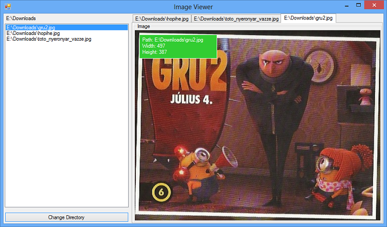

Eseményvezérelt alkalmazások fejlesztése 2.
5. gyakorlat - Saját vezérlõk készítése (WinForms)
- Elõzõ órán megismerkedtünk a WinForms adta alapvetõ lehetõségeivel: mostmár tudjuk a tervezõ (designer) nézetet használni, külön részelemekre tudjuk bontani a vezérlõket, ami abban segít nekünk, hogy újrafelhasználó elemei legyenek az alkalmazásainknak. Viszont ez még távolról sem elég, ezért elkezdjük körbejárni a különbözõ vezérlõket és azzal is megismerkedünk, hogy hogyan lehet újakat létrehozni a semmibõl, amiknek esetleg saját kinézetük is van.
- Megnézzük, hogy mire is való a Timer osztály ...
- Elkezdünk saját vezérlõket készíteni, saját megjelenéssel: azaz megismerkedünk a Graphics osztállyal.
- Az ügyfelek/felhasználók sokszor szeretik megnehezíteni a programozók életét, amiért mi horribilis (de teljesen reális) pénzeket szoktunk elkérni. Gyakran elõfordul, hogy ezeket a problémákat úgy tudjuk megoldani hogy valamilyen dinamikusságot kell implementálnunk a programjainkba. Futás közben kell generálnunk és megjeleníteni különbözõ vezérlõket, azokat pozicionálni stb.
- Ahogy arról már szó esett a vezérlõk egymás között gyerek-szülõ kapcsolatban állnak. A gyerekeket a Controls tulajdonságon keresztük lehet elérni, illetve annak segítségével lehet megsemmísiteni a meglévõket, újakat létrehozni.
Button button = new Button(); //létrehozunk bármilyen vezérlõt
button.Text = "Hello World!"; //beállítjuk a szükséges tulajdonságait
button.Dock = DockPanel.Fill;
//és a legvégén hozzáadjuk a meglévõ vezérlõkhöz
Controls.Add(button);
A Clear metódussal ki lehet törölni a meglévõ gyerekeket, míg a Remove-al specifikusabban tudjuk ezt megtenni.
- A vezérlõkkel csakis eseményeken keresztül tudunk kommunikálni, illetve a felhasználói interakciókra ezeken keresztül tudunk reagálni. Már magának a Control osztálynak is rengeteg eseménye van és ezeket csak kiegészítik a leszármazottjai. Sajnos ezek a vezérlõk már nem támogatják az érintõképernyõn történt felhasználói beavatkozások eseményeit.
- ControlAdded: Akkor hívódik meg, amikor dinamikusan hozzáadunk egy új gyerekvezérlõt, a vezérlõnkhöz.
- ControlRemoved: Hasonlóan a ControlAdded-hoz, ez is akkor hívódik meg, amikor a gyerekvezérlõknek a gyûjteménye megváltozott, csak éppen akkor, amikor egy már meglévõt törlünk ki.
- Disposed: Akkor fut le, amikor meghívódik a vezérlõn a Disposed metódus.
- GotFocus: Akkor fut le az esemény, amikor a vezérlõ megkapja a fókuszt.
- LostFocus: A GotFocus ellentettje, akkor fut le, amikor leveszítette a fókuszt a vezérlõ.
- LocationChanged: Akkor fut le ez az esemény, amikor megváltozik az esemény pozicíója.
- Click: Akkor fut le, ha a felhasználó rákattintott az adott vezérlõre.
- DoubleClick: Duplakattintás esetén fut le az esemény.
- MouseCaptureChanged: Amikor hívódik meg, amikor a vezérlõ elveszti az "egér fókuszát".
- MouseClick: Az egérrel való rákattintás esetén hívódik meg.
- MouseDoubleClick: Hasonlóan ha a felhasználó az egérrel duplán kattint a vezérlõre, akkor ez az esemény hívódik meg.
- MouseDown: Ha az egérnek valamelyik gombja lenyomódik, akkor ez az esemény fut le.
- MouseEnter: Akkor hívódik meg, amikor az egér kurzorja belép a vezérlõt kirajzoló területre. Jellemzõen ilyenkor szoktuk kicsit átrajzolni a gombunkat, hogy a felhasználó valamilyen interakciót lásson a képernyõn.
- MouseHover: Amikor a kurzor a vezérlõ felett van és "megpihen", akkor fut le az esemény.
- MouseLeave: A MouseEnter ellentettje. Akkor fut le az esemény, amikor a kurzor elhagyja a vezérlõt.
- MouseMove: Akkor fut le, amikor az egér kurzorja megmozdul a vezérlõn.
- MouseUp: Akkor hívódik meg, amikor a felhasználó felengedte az egérnek valamelyik gombját.
- MouseWheel: Ha a felhasználó megmozdította az egér görgõjét, akkor ezen az eseményen keresztül reagálhatunk rá.
- Control.PointToClient: Kicsit kilóg a sorból, de hasznos metódus tud lenni. Segítségével transzformálni lehet egy képernyõ koordinátáját a kliens koordinátájára.
- Mielõtt bármilyen egyenest, kört vagy téglalapot rajzolni tudnánk, ahhoz, szükségünk lesz egy Graphics típusú objektumra, ugyanis ezen keresztül érhetjük el az adott vezérlõnk megjelenítéséért felelõs metódusokat.
- Ezzel a megoldással a vezérlõinknek egyedi megjelenítést definiálhatunk eléggé alacsony szinten. A probléma innen is adódik, mert legtöbb esetben nem elég magasszíntûek ezek a megoldások (láthattuk a Qt-nál is), ezért a látványos dolgokért sokat kell dolgoznunk.
- Háromféleképpen tudunk a Graphics objektumhoz hozzáférni:
- A PaintEventArgs objektumból lekérdezhetjük a Graphics nevû tulajdonságát és azon keresztül tudjuk magát a vezérlõnek az egyedi kinézetét változtatni.
- Meghívhatjuk az objektum CreateGraphics nevû metódusát, ami egy Graphics objektummal fog visszatérni.
- Harmadik lehetõségként pedig ha az osztályunk az Image-bõl származik, akkor lehetõségünk van az Image statikus metódusán keresztül lekérni a Graphics objektumot.
- De miért is jó nekünk, ha valami objektumon keresztül próbálunk rajzolgatni? Talán azért is, mert nem közvetlenül a belsõ reprezentációt (adatokat) manipuláljuk, hanem függvényeken keresztül próbálunk meg elérni valamit. Ezzel kicsit magasabb szintre emeltük magát a rajzolást.
- Hátránya, hogy még mindig nem elég magasszintû és ez hosszútávon problémákat eredményezhet. A másik, hogy raszteres rajzolásról van szó, vagyis pixeleket transzformálunk. Ezért is jobb megközelítés a WPF-ben látott módszer, ahol vektorgrafikához hasonlóan lehet rajzolni.
- Az effektezéseket (mint pl.: vetett árnyék, elmosódás stb.) is ezen a Graphics objektumon keresztül kell megoldanunk, ami nem minden esetben szerencsés megoldás.
- Tehát ha tehetjük, akkor próbáljuk meg kiegészíteni a Graphics objektum adta lehetõségeket (mivel lezárt osztály, ezért csak extension method-okkal lehet megoldani vagy factory tervezési minta segítségével). Különbözõ trükkökkel kezelhetõbbé lehet tenni a rajzolásokat.
- Milyen lehetõségek is állnak rendelkezésünkre?
- Az InterpolationMode tulajdonságon keresztül tudjuk beállítani, hogy a rajzolás milyen minõségben jelenjen meg a képernyõn. Rengeteg lehetõségünk van: Bicubic, Bilinear, High stb. Itt meg lehet nézni az összes lehetõséget.
- A Clear metódussal egy adott színnel tudjuk kitölteni a rendelkezésre álló területet.
- A rajzolásokat két kategóriába tudjuk sorolni: Draw- és Fill- metódusok. Az elõbbivel az alakzatok körvonalát lehet kirajzolni, míg az utóbbival az alakzatokat lehet kitölteni valamilyen színnel.
- Lehetõségünk van bezier görbét, íveket, görbéket, ellipszist, ikont, képeket, vonalakat, polygont, illetve téglalapokat.
- Szövegeket a DrawString metódussal tudunk megjeleníteni, de még mielõtt kirajzolnánk a szöveget, sokszor jó lenne tudni, hogy mekkora helyet is fog foglalni az magában. Erre való a MeasureString nevezetû metódusunk, ami a megadott paraméterek alapján egy mérettel tér vissza.
- Sajnos a WinForms nem támogatja magasszinten az animációkat (lényegében sehogy sem támogatja), ezért magunknak kell megoldani ezt a problémát. De nem csak erre való maga a Timer osztályunk.
- Egy egészen egyszerû objektumról van szó, ami garantálja nekünk, hogy a neki megadott idõközönként lefuttat egy metódust nekünk.
- Ezért is fontos, hogy ezekbe a metódusokba ne tegyünk hosszú ideig futó kódokat, hiszen azzal nem tudja biztosítani az idõzítõnk, hogy az adott idõközönként fognak lefutni.
- A Start/Stop metódusokkal lehet elindítani, illetve megállítani az idõzítõnket. De szünetelteni az Enabled logikai tulajdonsággal is, ami nagyon hasznos tud lenni sok esetben.
- Az Interval tulajdonsággal az idõt lehet beállítani: az 1000 jelenti a másodpercenként lefutó eseményt.
- A Tick eseményre feliratkozva tudjuk lefuttatni a megfelelõ metódusainkat.
[ Demo ]
Képnézegetõ program készítése
-
Következõ a feladatunk: Szeretnénk készíteni egy képnézegetõ programot (skeleton), ami képes megjeleníteni egy TabControl segítségével akár több képet is. A program elkészítésénél törekedjünk a Model-View architektúra betartására.

[ Köszönöm a figyelmet! ]